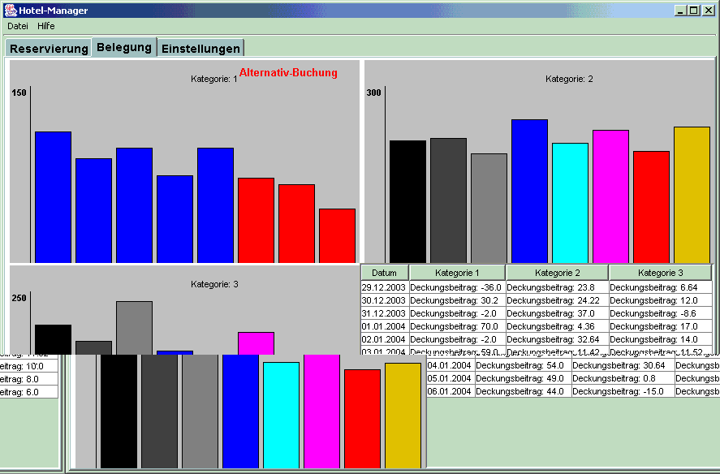

In einem Hotel mit verschiedenen Zimmerkategorien soll gewährleistet werden, dass zu jeder Zeit möglichst viele Buchungen angenommen werden können und der erzielte Deckungsbeitrag des Hotels maximiert wird. Dieser hängt von der Auslastung der Zimmer, der Anzahl der erwarteten kurzfristigen Buchungen und von den gewährten Preisnachlässen ab. Das Programm schlägt immer die nächste optimale Buchungsalternative vor und zeigt diese grafisch an:
